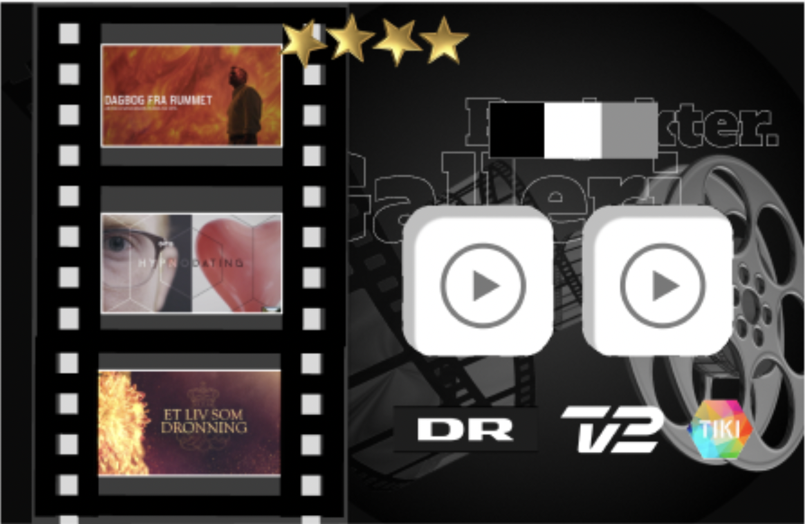
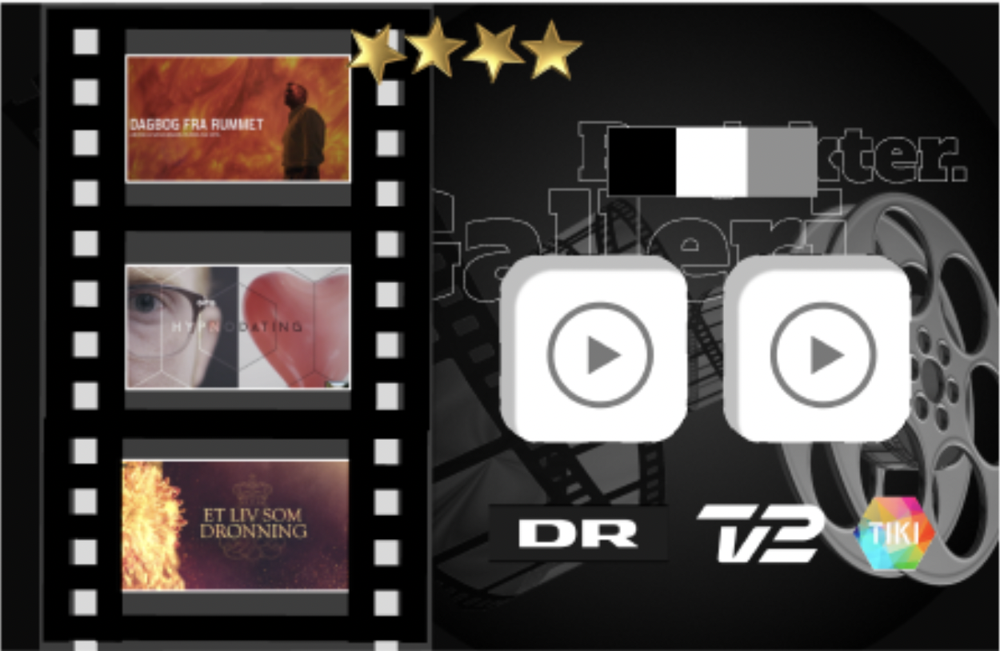
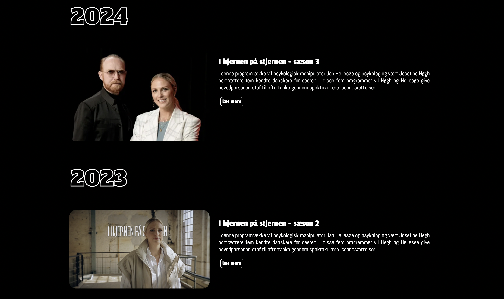
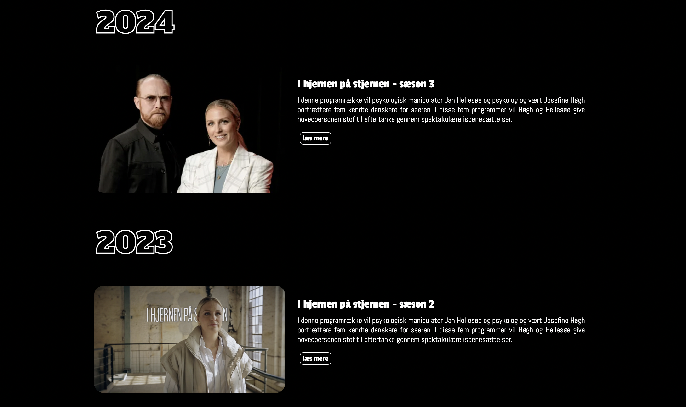

tiki medias originale site

vores forbedrede tiki media site

TIKI MEDIA er et dynamisk produktionsselskab, der har skabt indhold og leveret produktioner for store aktører som DR og TV2. Virksomhedens hjemmeside har ikke til formål at markedsføre eller ekspandere. de har allerede et stærkt netværk og loyale kunder. I stedet er siden et sted, hvor de kan præsentere deres arbejde og skabe en solid base.
At skabe et design og indhold til en virksomhed uden en klar målgruppe har været en spændende udfordring. Derfor har vi fokuseret på at udvikle et enkelt, stilrent og brugervenligt site, der gør det nemt for besøgende at navigere og få et indtryk af TIKI MEDIAs portefølje.
Vores oprindelige idé var at skabe et site fyldt med bevægelse og dynamik, der kunne fange øjet og vække nysgerrighed. Men efter at have reflekteret over vores målgruppe, som vi ikke på forhånd havde defineret klart, indså vi hurtigt, at den rette tilgang var at holde det enkelt og stringent. Det var essentielt for os at skabe en oplevelse, der kunne appellere bredt, samtidig med at vi fremhævede det, der virkelig betyder noget: deres arbejde.
Derfor valgte vi et minimalistisk design med et klinisk udtryk, hvor sort og hvid fungerer som den primære farvepalette. Denne enkle, men kraftfulde æstetik gør, at vores billeder – som er selve produktet – får lov at træde frem i al deres kraft. Vi ønskede et site, der ikke overdøver, men derimod understøtter og giver plads til det visuelle indhold, så det taler for sig selv og skaber en god oplevelse for den besøgende.
I forhold til design og stil var det vigtigt for os at følge nogle specifike designprincipper for at skabe et så brugervenligt og stilrent site som mugeligt. Derfor lagde vi stor vægt på fire gennemgående principper;
 

Vores arbejds proces har måske været lidt utraditionel, da vi ikke have den store kommunikation med vores virksomhed, og faktisk heller ikke nogle krav eller ønsker til siden. Denne fri opgave satte derfor vores arbejds gang på en prøve. Vi startede med hver i gruppen at lave et udkast til desing, prototype og æstetik, og lavede derefter en liker test og evaluerede ud fra dens respons. Derefter arbejde vi fokuseret på et stilrent og filmisk udtryk og på stilrene elementer der stadig havde en konkret brugervenlig funktion.
I forhold til refleksion omkring arbejdet var vi i gruppen meget enige og tilfredese over de generelle forbedringer fra den presenterede side vi fik udleveret til det produkt vi endte op med. selvfølgelig er der ting der godt kunne være anderledes, men en ting som både var godt og skidt var den store frihed som vi har fået lov til at arbejde med. vi havde ingen rammer fra vores virksomhed og ingen målgruppe, pallette eller stil. derfor havde vi meget frihed som en gruppe, hvilket jo på mange punkter både kan være svært men også sjovt. og vi syntes at vi er kommet frem til et mere brugervenligt design og et mere æstetisk og generelt mere gennemført site.
Gennem hele processen med at udvikle TIKI MEDIA's hjemmeside har vi arbejdet målrettet på at skabe en løsning, der fremhæver virksomhedens produkter (altså produktion). Selvom vi stod over for udfordringen med en uklar målgruppe og meget frie rammer, valgte vi at bruge dette som en mulighed for at tænke kreativt og eksperimentere med de simple design. Ved hjælp af research, feedback gennem en Likert-test og vores individuelle designforslag, lykkedes det os at sammensætte et site, der både er æstetisk, brugervenligt og funktionelt. Vores minimalistiske tilgang med høj kontrast mellem sort og hvid sikrer, at fokus forbliver på TIKI MEDIA’s visuelle indhold, mens det enkle layout gør navigationen let og intuitiv.
 


mads Levornsen, podkast enktusiast. I en tidelig alder blev Mads Levornsens græbet af lyd igennem sin tid på efterskolen, hvor han gik på film og tv linjen. Facinationen af lyd har ført ham til, at nu være vært på flere forskelige podkasts. den ene podkast er, "historier fra grønsværen" hvor Mads Levornsen er medvært sammen med Sander Gerits. Nu læser mads Levornsen medie produktion og ledelse på dhx. og er i praktik hos heartbeats, hvor han laver podkast til brøn i alderen 9 til 13 om fodbold på platformen hul igennem.